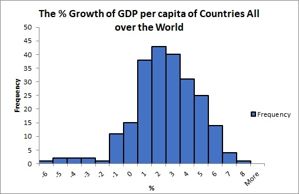

What is a distribution? The distribution helps dispaly the various outcomes in a sample by showing the frequencies of a specific number or within an interval.
Level: the level is a norm, and provides the average size of the data like the mode, the mean, and the median. Those are sometimes called measures of central tendency. They gives some informations about how is the distribution looked like. Becasue we can mostly get how the distribution is skewed.
Shape: can be displayed in many ways. The neat thing of shape is that it can tell us the basic information of the distribution like the level and spread. We can put it that way. The level and the spread define the shape of the distribution, and that's why through the shape, we can analyze the level and the spread.
Spread: can describe how extent the distribution is. The range can help define the maximum and the minimun of the distribution, which give us the starting point and the ending point. With the level counted, measures like variance, standard deviation, interquartile range can give us more details about the distribution.
Outliers: is the weirdo who will not fit the norm, which means it differs significantly from other data. An outlier is easily observed and it will affect the range of distribution.

My Own Example: there is a histogram I draw for the 2017 % growth in GDP per capita of countries all over the world. There are 230 data. From the graph, can you tell me the shape of it and make any guess about the level?
Guess what?
It is left-skewed.The mode is between 1 and 2! The mean is smaller than the median!